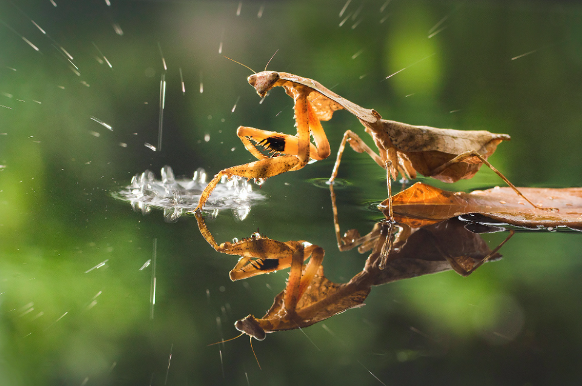

Mantis religiosa
La mantis religiosa es un insecto depredador caracterizado por sus patas delanteras en forma de garra y su postura erguida. Es conocida por su habilidad para acechar y atrapar presas con gran rapidez.
Características principales
Tamaño: Entre 4 y 12 cm, dependiendo de la especie.
Peso: Varía según la especie, pero en general es muy ligera.
Tiene un cuerpo alargado, patas delanteras especializadas para la caza y una cabeza triangular con ojos grandes.
Se encuentra en praderas, bosques y jardines, donde se camufla entre las hojas.
Es un cazador sigiloso que espera pacientemente a su presa antes de atacar con rapidez.
Alimentación
La mantis religiosa es carnívora y se alimenta de insectos, arañas e incluso pequeños vertebrados. Usa sus patas delanteras para atrapar y sujetar a su presa mientras la devora.
Especies destacadas
Mantis religiosa europea (Mantis religiosa)
Mantis orquídea (Hymenopus coronatus)
Mantis fantasma (Phyllocrania paradoxa)
Curiosidades
¿Sabías que la mantis religiosa puede girar su cabeza hasta 180 grados? Esto le permite vigilar su entorno en busca de presas o depredadores.
⬅ Volver a la sección de insectos y arácnidos